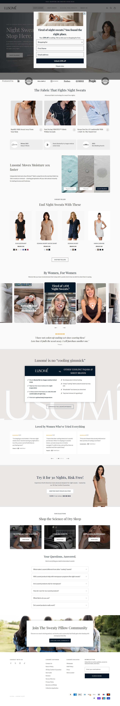
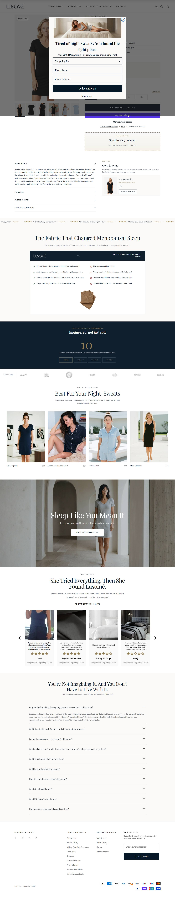
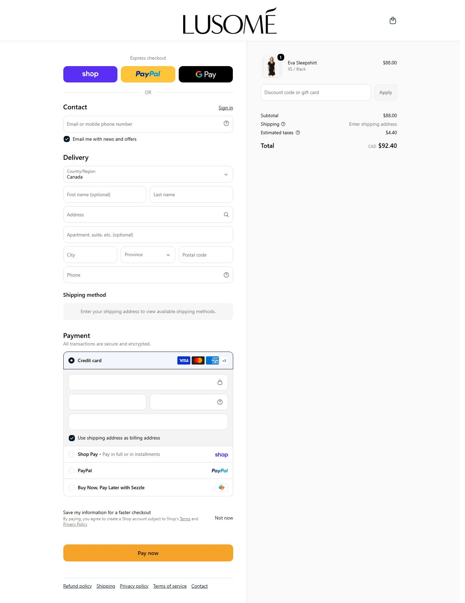

O posicionamento mais afiado da amostra. Vende cooling sleepwear pra mulher com suores noturnos e menopausa. Nao vende beleza, vende noite inteira de sono. E o MOLDE do angulo vencedor do nicho.
Produto campeao/recente: Lillian Chemise. Ticket medido via products.json (mediana = preco do meio, nao AOV real).
| Produto | Preco | Compare-at |
|---|---|---|
| Lillian Chemise | $94.50 | $118.00 |
| Lucienne Nightie | $96.00 | $120.00 |
| Marilyn Sleepshirt | $88.00 | $110.00 |
| Serena Crop Pant Extended Sizing | $70.50 | $88.00 |
| Serena Cropped Pant Sale | $70.50 | $88.00 |
Medido na Meta Ad Library em 22/07/2026 (contagem global por pagina via page_ids + estimated_total_count).
Momentum da operação: estavel/crescendo: campeao de 34 dias ativo, foco de angulo unico, sem sinal de retracao.
Amostra de 29 anúncios (ordenada por recência) na Ad Library. Ritmo, duplicação e o que está sobrevivendo há mais tempo.
| Anúncios por dia | 0,9 |
| Criativos únicos por semana | 1,7 |
| Fator de duplicação | 3,6x |
Base: inferido do padrao de titulo/duplicacao dos 29 ativos, nao da abertura de cada snapshot.
criativo simples de produzir: imagem/UGC e headline de beneficio. Custo de producao baixo pra competir.
Ordenados por longevidade (dias no ar) e duplicação. O criativo mais antigo ainda ativo é o vencedor mais provável.
| Criativo campeão (headline real) | No ar | Por que funciona · link |
|---|---|---|
| "The #1 Hot Sleeper Secret 🏆" | 34d | Campeao de longevidade (34 dias ativo). Curiosidade ('secret') + identidade ('hot sleeper'). Formato de autoridade/ranking ver anúncio ↗ |
| "Cooling for Menopausal Night Sweats" | 22d | O mais duplicado da amostra. Nomeia a condicao clinica direto: menopausa. Vende problema resolvido, nao estetica ver anúncio ↗ |
| "The Gift That Ends the 3am Wake-Up" | 15d | Junta condicao (acordar 3h suando) + ocasiao (presente) na mesma linha. Dobra o mercado: quem sofre e quem presenteia ver anúncio ↗ |
| "Sleep 26 Minutes Longer, Every Night" | 15d | Mecanismo QUANTIFICADO. Promessa numerica especifica = alto poder de crenca ver anúncio ↗ |
Tráfego medido (SimilarWeb). Benchmark e faturamento aplicados do IRP Commerce Fashion, Clothing & Accessories (jun/2026).
Não descrever, decodificar. O que faz o campeão desta loja ganhar, para o mentorado copiar.
| Big idea / ângulo | Sleepwear que absorve umidade e te devolve a noite inteira de sono, especifico pra mulher com suor noturno e menopausa. |
| Mecanismo único | Tecido moisture-wicking 'Lusome' que puxa o suor e seca rapido: o 'porque funciona' e a fibra, nao a estetica. |
| Formato de hook | Pergunta/condicao no presente ('acordar 3h suando', 'hot sleeper') + prova numerica ('dorme 26 min a mais'). |
| Estrutura do presell | Sem advertorial pesado: o proprio anuncio e a autoridade (ranking '#1', 'lab-proven'). PDP com prova e ancoragem honesta. |
| Objeção principal | 'O cooling some depois de lavar?' respondida com 'lab-proven, stays cool after washes'. (A voz do mercado confirma: e a objecao central do nicho.) |
Modele esta home e esta PDP: veja a estrutura real do concorrente e o que copiar.
Modele esta home: lusome.com ↗ — copie a sequência de blocos, a prova social e a oferta acima da dobra.



ATENCAO: vende os produtos 'Serena Crop Pant' e 'Serena Cropped Pant'. Colisao direta com o nome da loja do usuario. NAO reutilizar o nome Serena na nova marca.
DROPSHIP DE MARCA. Shopify + Loox; produto (cooling sleepwear) sourceavel; MAS dominio de 2013, fibra propria 'Lusome' e angulo com historia = cara de marca defensavel. Dropship na replicabilidade, marca na defesa.
CONSTRUÍVEL. angulo com mecanismo proprio + historia (13 anos), recompra por durabilidade, ~35% trafego nao-pago estimado. Da pra construir marca, nao e churn-and-burn.
| Eixo | Pontos |
|---|---|
| Sourcing simples | 1/2 |
| Ticket fecha sem escada complexa | 2/2 |
| Criativo simples de produzir | 2/2 |
| Mecanismo com urgência | 2/2 |
| Investimento de entrada baixo | 1/2 |
| Sem dependência de autoridade de marca | 2/2 |
| Soma | 10/12 → NÍVEL INICIANTE |
sourcing 1: o diferencial e a fibra duravel (o gap do nicho), nao qualquer PJ. Resto alto: ticket $88 fecha, criativo simples, mecanismo urgente (menopausa/suor), sem depender de marca.